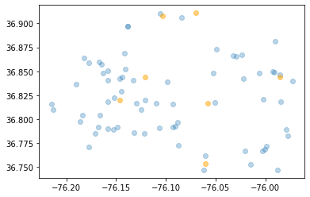
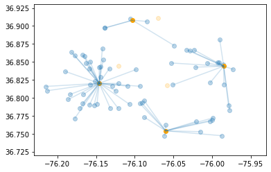

import pandas as pd
import matplotlib.pyplot as plt
from matplotlib import collections as mc
import numpy as np
import gurobipy as gp
from gurobipy import GRB
from datetime import datetime
from sklearn.mixture import GaussianMixture
from sklearn.cluster import KMeansDrone-Network Design Queueing Model
This notebook uses the model and data from the following studies:
- Lejeune M.A., Margot F. 2022. Drone-Network Design for Out-of-Hospital Cardiac Arrests. Working Paper, submitted.
- Custodio.J., Lejeune M.A. 2022. Spatiotemporal Data Set of Out-of-Hospital Cardiac Arrests. INFORMS Journal on Computing 34 (1), 4-10.
The data and its full description can be found here: https://github.com/INFORMSJoC/2020.1022
The example reads from the VBOHCAR Excel file that contains data for: - out-of-hospital cardiac arrest (OHCA) incidents - potential base stations for drones - pairwise incident/base station (Harversine) distances
The MILP reformulation is modeled in gurobipy and solved using the Gurobi Optimizer.
To begin, we import the necessary packages for data intake, modeling, and visualization.
Input Data Processing and Visualization
We use pandas to quickly read in the required sheets from Excel. There is a small amount of data prep needed, where some duplicate events need to be removed and text should be cleaned. For reference, an incident location encompasses a street block.
# read incident and base station data
ohca_read = pd.read_csv('https://raw.githubusercontent.com/Gurobi/modeling-examples/master/drone_network_1_2/OHCAs.csv', index_col=0)
stations_read = pd.read_csv('https://raw.githubusercontent.com/Gurobi/modeling-examples/master/drone_network_1_2/BaseStations.csv', index_col=0)
# read data on indicent-base distance
dist_read = pd.read_csv('https://raw.githubusercontent.com/Gurobi/modeling-examples/master/drone_network_1_2/Base_to_OHCA_distance.csv', index_col=[0,1])The above reads the complete data set, including all OHCAs, base stations, and respective distances. We will subset indicent data to the last month and select seven stations to get an instance that will solve in the notebook.
# select a subset of OHCAs so the model can be solved in this notebook (if you have a full license then you can use all incidents)
start_date = '2019-05-31'
end_date = '2019-06-30'
n_days = (datetime.strptime(end_date, "%Y-%m-%d") - datetime.strptime(start_date, "%Y-%m-%d")).days
ohca_df = ohca_read[(ohca_read.ReceivedTime >= start_date) & (ohca_read.ReceivedTime <= end_date)]
# select a subset of base stations so the model can be solved in this notebook (if you have a full license then you can use all stations)
stations_df = stations_read.loc[[2,3,5,14,25,31,35]]
# some bases are different types (e.g. fire and police), add the type to create a different base name
stations_df['Base'] = stations_df.Street + ' ' + stations_df.Type
dist = dist_read.loc[dist_read.index.get_level_values(1).isin(ohca_df.index)]
dist = dist.loc[dist.index.get_level_values(0).isin(stations_df.index)]
print(f"Number of days: {n_days} \nNumber of OHCAs: {ohca_df.shape[0]}")Number of days: 30
Number of OHCAs: 69Next, we create scatterplots to visualize the OHCA locations and stations.
plt.scatter(data = ohca_df, x = 'Longitude', y = 'Latitude', alpha = .3)
plt.scatter(data = stations_df, x = 'Longitude', y = 'Latitude', alpha = 0.5, c = 'orange')<matplotlib.collections.PathCollection at 0x26103255190>
# create a base / OHCA data frame using the location names
df = dist.join(ohca_df[['Incident_Location']])
df = df.join(stations_df['Base'])
df = df.drop_duplicates()
df = df.set_index(['Incident_Location','Base'])MILP Model
Parameter Calculation
We assume that drones at each station will have the same speed and mainenace times. The total time it takes a drone to service an OHCA is travel time (to and back from the OHCA location) plus maintenance time.
# limit number of drones
n_drones = 4
# assume a 100 km/hr drone speed (about 38 mph) for each drone
speed = 100
# average time to prep, dispatch, clean, perform maintenance etc. a drone is 25 min, converted to hours
maintenance = 25/60
# calculate average service time from i to j (converting to meters to kilometers)
distance = df['Harversine Distance (meters)']
service_time = maintenance + 2*0.001*distance/speed
service_time = service_time.rename('service_time')Next, we use the MLE for the arrival rate of an OHCA to each location \(i\) as \(\lambda_{i} = N_i/t\), where \(N_i\) is the number of incidents over time \(t\).
incident_count = ohca_df.Incident_Location.value_counts()
# arrival rate is in hours to match drone speed units
arrival_rate = round(incident_count/(24*n_days),6)
I = df.index.get_level_values(0).unique()
J = df.index.get_level_values(1).unique()
# make list of each OHCA / base pair
base_to_ohca = df.index.tolist()
# print DAILY arrival rates for each location
24*arrival_rate.sort_values(ascending = False)1700 PLEASURE HOUSE RD 0.066672
1800 DOLINA DR 0.033336
3600 BONNEY RD 0.033336
3400 CHAMPLAIN LA 0.033336
2400 LAUREL COVE DR 0.033336
...
4400 SANIBEL CI 0.033336
1600 OLD DONATION PKWY 0.033336
600 FLEET DR 0.033336
200 ARAGONA BL 0.033336
1200 GENERAL ST 0.033336
Name: Incident_Location, Length: 68, dtype: float64Base Formualtion (BF) Variables and Constraints
We start to build the MILP model by introducing binary variables \(x_{j}\) and \(y_{i,j}\) which will be 1 if location \(j\) is chosen and services OHCA \(i\). We start with constraints typical to facility location problem. \[\begin{align} &y_{i,j} \le x_j \\ &\sum_{j \in J} x_j \le p \\ &\sum_{i \in I_{j}} y_{i,j} = 1 \\ \end{align}\]
Next, we require each queue meet stability requirements: \[\begin{align} \sum_{i \in I_{j}}\lambda_{i}s_{i,j}y_{i,j} \le 1 \end{align}\]
Below are these constaints written in gurobipy.
m = gp.Model('drone_network')
x = m.addVars(J, vtype=GRB.BINARY, name='x') #selection
y = m.addVars(base_to_ohca, vtype=GRB.BINARY, name='y') #assignment
m.addConstrs((y[(i,j)] <= x[j] for i,j in base_to_ohca), name='select')
m.addConstr(x.sum() <= n_drones, name = 'drone_limit')
m.addConstrs((y.sum(i,'*') == 1 for i in I), name = 'ohca');
m.addConstrs(((gp.quicksum(arrival_rate[i]*service_time[i,j]*y[(i,j)] for i in I) <= 1) for j in J), name='stability');Reformulated MILP: Auxilary Variables, Constraints, and Objective Function
The objective for the original formulation is to minimize the average expected response time of the drone network. \[\begin{align} \text{min}\space \frac{1}{\sum_{k \in I}\lambda_k} \sum_{i \in I} \sum_{j \in J_{i}} \left(\frac{\lambda_iy_{i,j} \sum_{k \in I}\lambda_ky_{k,j}s^{2}_{k,j} }{2[1-\sum_{k \in I}\lambda_ky_{k,j}s_{k,j}]} + \frac{d_{i,j}\lambda_iy_{i,j}}{v_j}\right) \end{align}\]
The objective function contains factional and bilinear terms but can be reformualted in such a way that these terms are removed and linearized, creating a MILP. To do this, Linking variables need to be introduced to create the reformulation.
\[\begin{align} &V_j = \sum_{i \in I_{j}} \lambda_is^{2}_{i,j}y_{i,j} + \sum_{i \in I_{j}} \lambda_is_{i,j}y_{i,j} \\ &\nu_{i,j} \ge 0 \\ &\nu_{i,j} \ge \overline{V}(y_{i,j}-1) + V_j \\ &\nu_{i,j} \le \overline{V}y_{i,j} \\ &\nu_{i,j} \le V_j \\ \end{align}\]
The objective function now is: \[\begin{align} \text{min}\space \sum_{i \in I} \sum_{j \in J_{i}} \left(\frac{\nu_{i,j}}{2} + \frac{d_{i,j}y_{i,j}}{v_j}\right)\frac{\lambda_i}{\sum_{k \in I}\lambda_k} \end{align}\]
# Auxilary variables and constraints for R-MILP
Vbar = 2*service_time.sum()
V = m.addVars(J, ub = Vbar, name = 'V')
nu = m.addVars(base_to_ohca, name='nu')
m.addConstrs((V[j] == gp.quicksum(arrival_rate[i]*service_time[i,j]**2*y[i,j] for i in I) + gp.quicksum(arrival_rate[i]*service_time[i,j]*nu[i,j] for i in I) for j in J), name = 'aux0')
m.addConstrs((nu[i,j] <= V[j] for i, j in base_to_ohca), name = 'aux1')
m.addConstrs((nu[i,j] <= Vbar*y[i,j] for i, j in base_to_ohca), name = 'aux2')
m.addConstrs((nu[i,j] >= Vbar*(y[i,j]-1) + V[j] for i, j in base_to_ohca), name = 'aux3')
# for ease in setting the objective there is a bit a simplification
L = arrival_rate.sum()
m.setObjective((1/L)*(gp.quicksum(0.5*arrival_rate[i]*nu[(i,j)] + (arrival_rate[i]*distance[i,j]/speed)*y[(i,j)] for i, j in base_to_ohca)));Run the optimization:
m.optimize()Gurobi Optimizer version 10.0.2 build v10.0.2rc0 (win64)
CPU model: 11th Gen Intel(R) Core(TM) i7-1165G7 @ 2.80GHz, instruction set [SSE2|AVX|AVX2|AVX512]
Thread count: 4 physical cores, 8 logical processors, using up to 8 threads
Optimize a model with 1987 rows, 966 columns and 6202 nonzeros
Model fingerprint: 0xdb44b4e9
Variable types: 483 continuous, 483 integer (483 binary)
Coefficient statistics:
Matrix range [2e-04, 6e+02]
Objective range [7e-03, 5e+00]
Bounds range [1e+00, 6e+02]
RHS range [1e+00, 6e+02]
Presolve removed 7 rows and 0 columns
Presolve time: 0.06s
Presolved: 1980 rows, 966 columns, 6202 nonzeros
Variable types: 483 continuous, 483 integer (483 binary)
Root relaxation: objective 3.732321e+01, 202 iterations, 0.01 seconds (0.01 work units)
Nodes | Current Node | Objective Bounds | Work
Expl Unexpl | Obj Depth IntInf | Incumbent BestBd Gap | It/Node Time
* 0 0 0 37.3232102 37.32321 0.00% - 0s
Explored 1 nodes (202 simplex iterations) in 0.10 seconds (0.09 work units)
Thread count was 8 (of 8 available processors)
Solution count 1: 37.3232
Optimal solution found (tolerance 1.00e-04)
Best objective 3.732321020846e+01, best bound 3.732321020846e+01, gap 0.0000%Visualize the Solution Network
Use getAttr in gurobipy to quickly get the \(x\) and \(y\) decision variable values.
# recover the bases used in the optimal solution
sol_x = pd.Series(m.getAttr('X',x))
bases_selected = sol_x[sol_x > 0.5]
bases_selected21 MUNICIPAL CTR Fire Station 1.0
800 VIRGINIA BEACH BLVD Fire Station 1.0
3769 E. STRATFORD ROAD Rescue Squad 1.0
5145 RURITAN COURT Rescue Squad 1.0
dtype: float64Now export the assignment variables and create a dataframe with the coordinates for each final indicent/base pair
# recover the assignment variable
sol_y = pd.Series(m.getAttr('X',y))
sol_y.name = 'Assignments'
sol_y.index.names = ['Incident_Location','Base']
assignment = sol_y[sol_y > 0.5].to_frame()
assignment = pd.merge(assignment.reset_index()[['Incident_Location','Base']], ohca_df[['Incident_Location','Latitude','Longitude']])
assignment.rename(columns = {'Latitude':'Inc_Latitude', 'Longitude': 'Inc_Longitude'}, inplace = True)
assignment = pd.merge(assignment, stations_df[['Base','Latitude','Longitude']])
assignment.rename(columns = {'Latitude':'Base_Latitude', 'Longitude': 'Base_Longitude'}, inplace = True)We can now visualize the solution by finding the coordinates for each assignment pair and creating a plot with the incidents and stations to visualize the final network. The light orange points are stations that were not selected.
coords = []
for r in range(assignment.shape[0]):
coords.append([(assignment.Base_Longitude[r],assignment.Base_Latitude[r]),(assignment.Inc_Longitude[r],assignment.Inc_Latitude[r])])
# plot the line segments, indicent points, and base station points of the final network
fig, ax = plt.subplots()
ax.set_xlim(-76.23, -75.93)
ax.set_ylim(36.72, 36.93)
lc = mc.LineCollection(coords, alpha = .2)
ax.add_collection(lc)
plt.scatter(data = ohca_df, x = 'Longitude', y = 'Latitude', alpha = .3)
plt.scatter(data = stations_df[stations_df['Base'].isin(bases_selected.index.tolist())], x = 'Longitude', y = 'Latitude', alpha = 1, c = 'orange')
plt.scatter(data = stations_df[~stations_df['Base'].isin(bases_selected.index.tolist())], x = 'Longitude', y = 'Latitude', alpha = 0.2, c = 'orange')
plt.show()
m.dispose()
gp.disposeDefaultEnv()Freeing default Gurobi environment